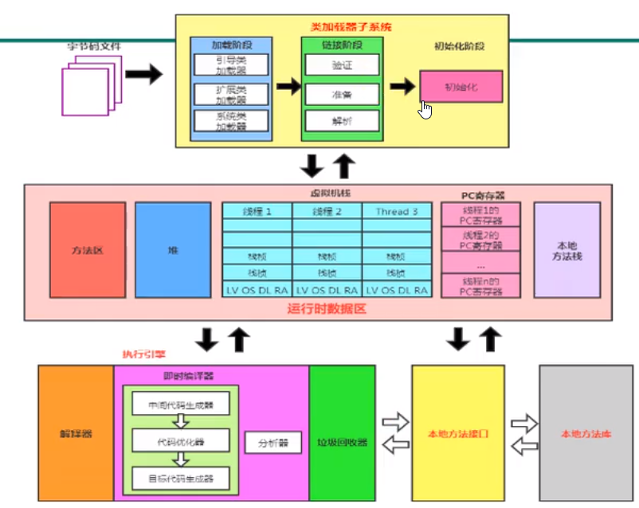
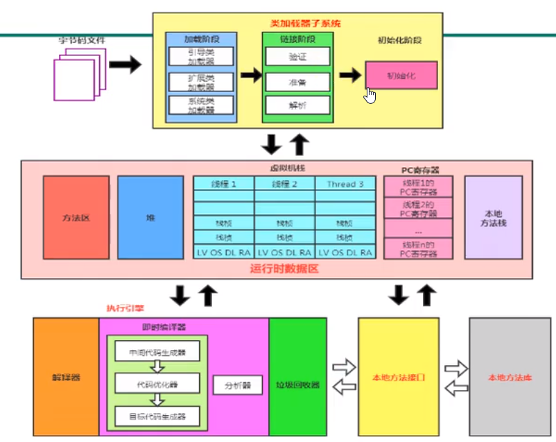

JVM-2_类加载子系统
最后更新时间:
内存与垃圾回收
内存结构概述
 

类加载子系统负责从文件系统或网络中加载class文件，class文件在文件开头有特定的文件标识
ClassLoader只负责class文件的加载，至于它是否可以运行，则由Execution Engine决定
加载的类信息存放在叫做方法区的内存空间。除了类信息外，方法区还存放运行时常量池信息，可能还有字符串和数字常量
class file加载到JVM中被称为DNA元数据模板，放在方法区
字节码文件.class
使用二进制查看器打开任意字节码文件可以观察到期开头4个字节用十六进制表示为CA FE BA BE(可记为咖啡宝贝)，这是字节码文件固定头部
1. 加载 Loading
- 通过一个类的全限定名获取定义此类的二进制字节流
- 将这个字节流所代表的今天存储结构转化为方法区的运行时数据结构
- 在内存中生成一个代表这个类的java.lang.Class对象，作为方法区这个类的各种数据的访问入口
可以从哪些地方加载.class文件呢：
- 本地文件加载
- 网络获取，典型场景：web Applet
- zip压缩包中读取
- 运行时计算生成，使用最多的是：动态代理技术
- 其它文件生成，例如：JSP应用
- 专有数据库提取.class文件，少见
- 加密文件中获取，可防止class文件被反编译
2. 链接 Linking
该阶段分为以下几步：
- 验证(Verify)
- 目的在于确保class文件的字节流中包含信息符合当前虚拟机的要求，保证被加载类的正确性，不会危害虚拟机自身安全
- 主要包括四种验证：
- 文件格式验证
- 元数据验证
- 字节码验证
- 符号引用验证
- 准备(Prepare)
- 为变量分配内存并且设置该类变量的默认初始值，即零值
- 这里不包含用final修饰的static，因为final在编译的时候就会分配了，准备阶段会显示初始化
- 这里不会为实例变量分配初始化，类变量会分配在方法区中，而实例变量会随着对象一起分配到java堆中
- 解析(Resolve)
- 将常量池内的符号引用转换为直接引用的过程
- 解析操作往往伴随JVM在执行完初始化之后再执行
- 符号引用就是一组符号来描述所引用的目标。
- 解析动作主要针对类或接口、字段、类方法、接口方法、方法类型等。
3. 初始化 Initialization
- 初始化阶段就是执行类构造器方法
<clinit>()的过程 - 此方法不需定义，是由javac编译器自动收集类中的所有类变量的赋值动作和静态代码块中的语句合并而来
- 构造器方法中指令按语句在源文件中出现的顺序执行
<clinit>()不同于类的构造器<init>()，若一个类中没有静态变量和静态代码块则字节码文件中无<clinit>()方法- 虚拟机必须保证一个类的
<clinit>()方法在多线程下被同步加锁
1 | |
反编译字节码文件可以看到存在<clinit>()和<init>()
<init>如下：
1 | |
可以看到先给a赋值10再给d赋值20
类的加载过程
类加载器的分类
JVM支持两种类型的类加载器：
- 引导类加载器(Bootstrap ClassLoader)
- 自定义类加载器(User-Defined ClassLoader)：所有派生于抽象类ClassLoader的类加载器都可划分为自定义类加载器
启动类加载器(引导类加载器, Bootstrap ClassLoader)：
- 使用C/C++语言实现，嵌套在JVM内部
- 用于加载Java的核心库(JAVA_HOME/jre/lib/rt.jar, resources.jar或sun.boot.class.path路径下的内容)
- 不继承于java.lang.ClassLoader，没有父加载器
- 加载扩展类和应用程序类加载器，并制定为他们的父类加载器
- 处于安全考虑，Bootstrap启动类加载器只加载包名为java, javax, sun等开头的类
扩展类加载器(Extension ClassLoader)
- Java语言编写，由sun.misc.Launcher$ExtClassLoader实现
- 派生于ClassLoader类
- 父类加载器为启动类加载器
- 从java.ext.dirs系统属性所指定的目录中加载类库，或从JDK的安装目录的jre/lib/ext子目录下加载类库。如果用户创建的JAR放在此目录，也会自动由扩展类加载器加载。
应用程序类加载器(系统类加载器, AppClassLoader)
- Java语言编写，由sun.misc.Launcher$AppClassLoader实现
- 派生于ClassLoader类
- 父类加载器为扩展类加载器
- 负责加载环境变量classpath或系统属性java.class.path指定路径下的类库
- 该类加载器是程序中默认的类加载器，通常Java应用的类都由它来加载
- 通过
ClassLoader#getSystemClassLoader()方法可以获取到该类加载器
获取Bootstrap ClassLoader类加载器和Extension ClassLoader类加载器可以加载的路径和jar包
1 | |
1 | |
用户自定义类加载器：
- 什么时候需要用户自定义类加载器：
- 隔离加载类：例如：确保应用中引用的jar包与中间件引用的第三方jar包不冲突
- 修改类加载方式：例如：需要时候动态加载
- 扩展加载源：例如：从数据库中加载
- 防止源码泄露
- 用户自定义类加载器实现步骤：
- 开发人员可以通过继承抽象类java.lang.ClassLoader类的方式实现自己的类加载器
- 在JDK1.2之前，自定义类加载器需要继承ClassLoader类并重写loadClass()方法，从而实现自定义的类加载器。JDK1.2之后不建议用户覆盖loadClass()方法，建议把自定义的类加载逻辑写在findClass()方法中
- 编写自定义类加载器时若无过于复杂的需求建议直接继承URLClassLoader类，这样可以避免自己去编写findClass()方法及获取字节码流的方式，是自定义类加载器编写更加简洁
1 | |
关于ClassLoader
常用方法：
- getParent(): 返回该类加载器的超类加载器
- loadClass(String name): 加载名称为name的类，返回结果为java.lang.Class类的实例
- findClass(String name): 查找名称为name的类，返回结果为java.lang.Class类的实例
- findLoadedClass(String name): 查找名称为name的已经被加载过的类，返回结果为java.lang.Class类的实例
- defineClass(String name, byte[] b, int off, int len): 把字节数组b中的内容转换为一个Java类，返回结果为java.lang.Class类的实例
- resolveClass(Class<?> c): 连接指定的一个Java类
双亲委派机制
JVM对class文件采用按需加载的方式，即需要使用到该类时才会把class文件加载到内存生成class对象。而且在加载时JVM采用的是双亲委派机制，即把请求交由父类处理，它是一种任务委派模式。
- 如果一个类加载器收到了类加载请求，它并不会自己先去加载，而是把这个请求委托给父类的加载器去执行
- 如果父类加载器还存在其父类加载器，则进一步向上委托，一次递归，请求最终将到达顶层的启动类加载器
- 如果父类加载器可以完成类加载任务，就成功返回，若无法完成，子类加载器才会去加载。
优点：
- 避免类的重复加载：一旦一个类被父加载器加载则不会再被子加载器加载
- 保护程序安全，防止核心API被篡改：比如你自己定义一个java.lang.String就不会被AppClassLoader加载而是Bootstrap ClassLoader加载java的String
沙箱安全机制：
自定义String类在加载的时候回率先使用引导类加载器加载，而引导类加载器会先加载JDK自带的文件rt.jar包中的java\lang\String.class，这样可以保证对java核心源代码的保护
其它
JVM中表示两个class对象是否为同一个类存在的两个必要条件：
- 类的完整类名必须一致，包括包名
- 加载这个类的ClassLoader(指ClassLoader实例对象)必须相同
对类加载器的引用
JVM知道一个类时由启动类加载器加载器加载的还是由用户类加载器加载的。若是由用户类加载器加载的，JVM会将这个类加载器的一个引用作为类型信息的一部分保存在方法区中。当解析一个类到另一个类的时候，JVM需要保证这两个类的类加载器是相同的。
类的主动使用与被动使用
主动使用的七种情况：
- 创建类的实例
- 访问某个类或接口的静态变量，或对该静态变量赋值
- 调用类的静态方法
- 反射
- 初始化一个类的子类
- Java虚拟机启动时被标明为启动类的类
- JDK7开始提供动态语言支持：
- java.lang,invoke.MethodHandle实例的解析结果
- REF_getStatic, REF_putStatic, REF_invokeStatic句柄对应的类没有初始化，则初始化
除了主动使用的七种情况外都算被动使用